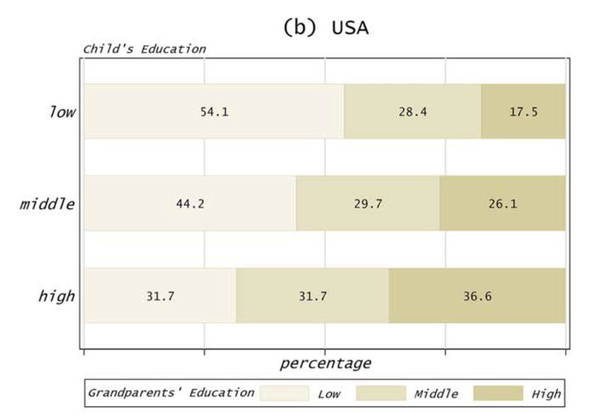

The economics of inequality
Intergenerational Mobility
November 18, 2022
Alternative figure of educational mobility

Decreasing absolute mobility in the US

Multigenerational persistence


Bibliography
Barone, Guglielmo/Mocetti, Sauro (2020). Intergenerational mobility in the very long run: Florence 1427-2011. The Review of Economic Studies, 88(4), 1863–1891. DOI: 10.1093/restud/rdaa075
Becker, Gary/Tomes, Nigel (1979). An equilibrium theory of the distribution of income and intergenerational mobility. The Journal of Political Economy, 87(6), 1153–1189.
Becker, Gary/Tomes, Nigel (1986). Human capital and the rise and fall of families. Journal of Labor Economics, 4(3), S1–S39.
Braun, Sebastian Till/Stuhler, Jan (2017). The transmission of inequality across multiple generations: Testing recent theories with evidence from germany. The Economic Journal, 128(609), 576–611. DOI: 10.1111/ecoj.12453
Chancel, Lucas/Piketty, Thomas/Saez, Emmanuel/Zucman, Gabriel (2018). World inequality report 2018. World Inequality Lab.
Chetty, Raj/Grusky, David/Hell, Maximilian/Hendren, Nathaniel/Manduca, Robert/Narang, Jimmy (2017). The fading american dream: Trends in absolute income mobility since 1940. Science, 356(6336), 398–406. DOI: 10.1126/science.aal4617
Clark, Gregory/Cummins, Neil (2015). Intergenerational wealth mobility in england, 1858–2012: Surnames and social mobility. The Economic Journal, 125(582), 61–85. DOI: 10.1111/ecoj.12165
Corak, Miles (2013). Income inequality, equality of opportunity, and intergenerational mobility. Journal of Economic Perspectives, 27(3), 79–102. DOI: 10.1257/jep.27.3.79
Daly, Herman E. (1982). Chicago school individualism versus sexual reproduction: A critique of becker and tomes. Journal of Economic Issues, 16(1), 307–312.
Franzini, Maurizio/Raitano, Michele (2009). Persistence of inequality in europe: The role of family economic conditions. International Review of Applied Economics, 23(3), 345–366. DOI: 10.1080/02692170902811777
Humer, Stefan (2014). Aufkommen von erbschaftssteuern – modellrechnung exemplarischer tarife. Wirtschaft Und Gesellschaft, 40(1), 151–159.
Mani, Anandi/Mullainathan, Sendhil/Shafir, Eldar/Zhao, Jiaying (2013). Poverty impedes cognitive function. Science, 341(6149), 976–980. DOI: 10.1126/science.1238041
Neidhöfer, Guido/Stockhausen, Maximilian (2018). Dynastic inequality compared: Multigenerational mobility in the united states, the united kingdom, and germany. Review of Income and Wealth, 65(2), 383–414. DOI: 10.1111/roiw.12364